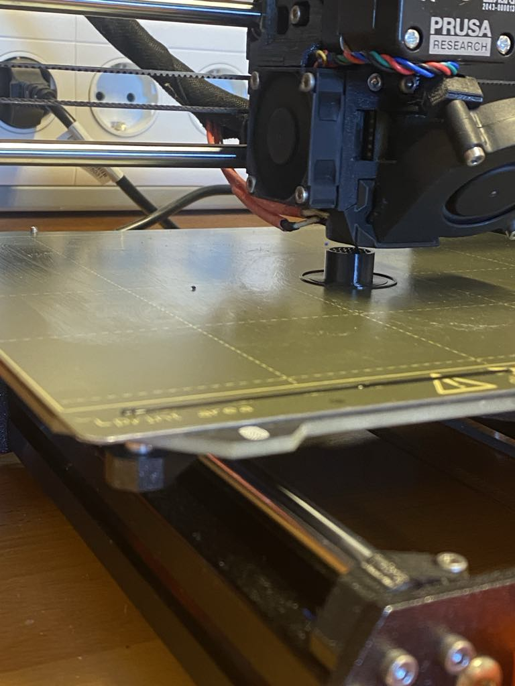
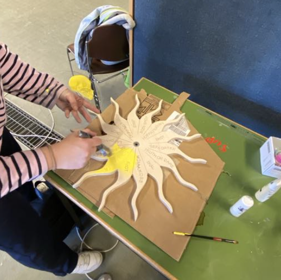
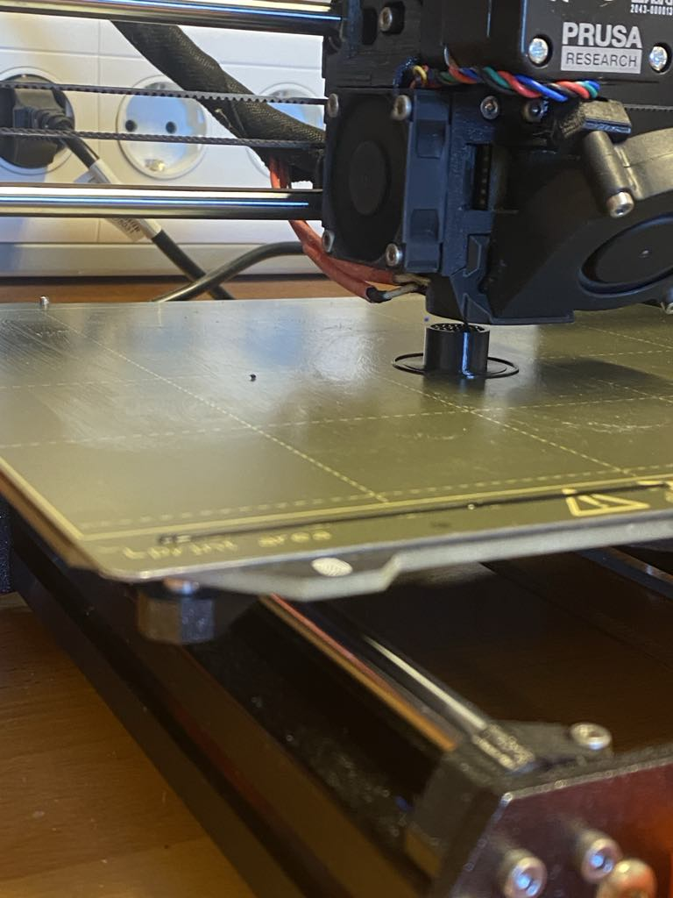
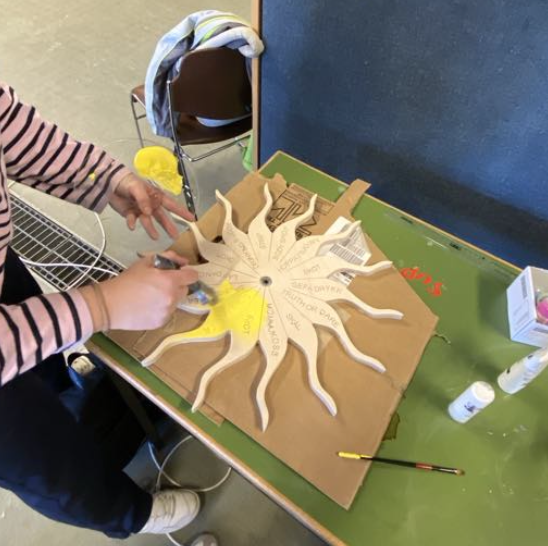
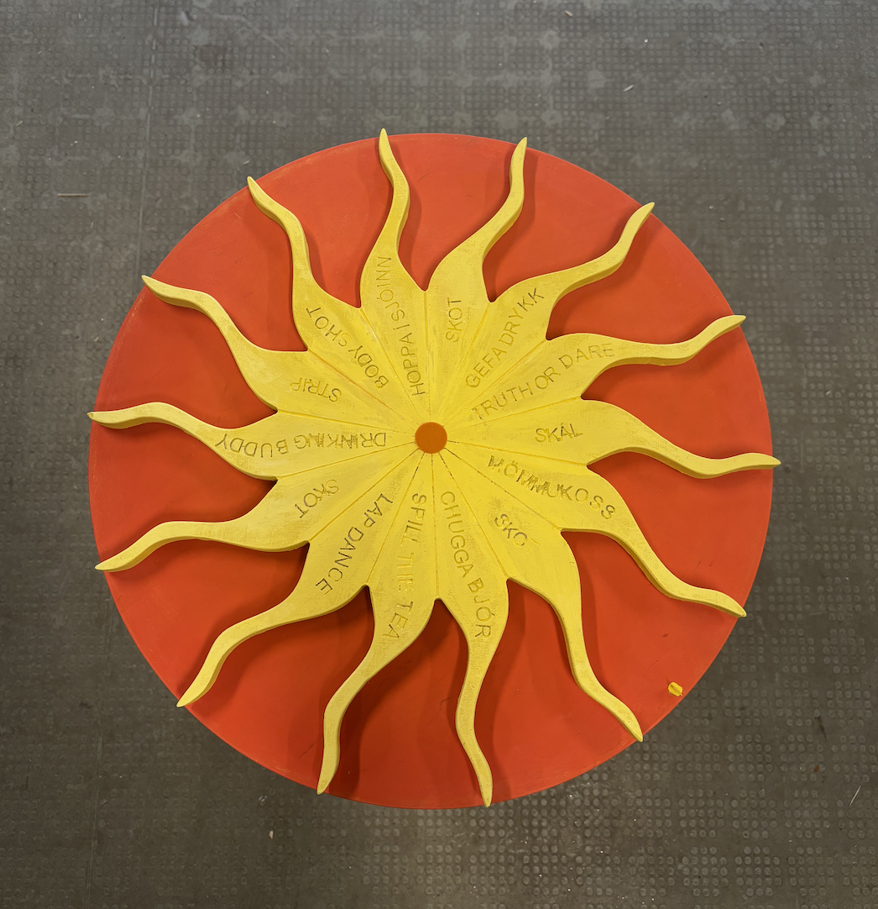
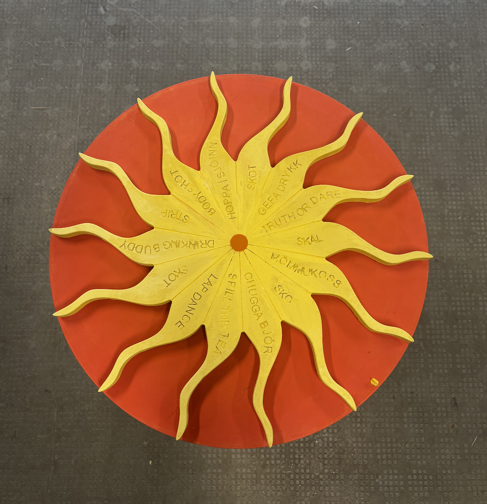

Lokaverkefni áfangans er að búa til heilstætt verkefni með því að innvinkla eina af tveimur aðferðum, þ.e. annað hvort að fræsa einhvern hlut í shopbot eða að fræsa mót í vax með Roland SRM-20. Verkefnið er hópaverkefni en hópurinn samanstendur af mér(Berghildi), Helgu og Kolbrúnu. Ákveðið var að hanna hlut fremur en mót, en það heillaði hópinn meira. Hinn hluti verkefnisins er síðan skrásetning og verkefnastjórnun en því var ákveðið að fara afar skipulega í gegnum allt ferlið. hönnunarþætti, framkvæmd, verkefnastjórnun og skipulag, samsetningu ofl.
Hluti 1 : Tillaga af lokaverkefni
Loka tillaga verkefnisins kom eftir mikla hugmyndavinnu hópsins. Það var skoðað að gera einhvers konar húsgagn eins og stól eða borð, síðan kom einnig vegglist inn í hugmyndaflæðið. En þar sem þetta er hópaverkefni var ákveðið að gera eitthvað sem allir í hópnum gætu notað. Þá fóru pælingar á loft um áfengishjól eins og finna má á börum víðs vegar um bæinn, en enginn bar var þó til staðar. Hugmyndin á hjólinu hélt þó enn lofti og þróaðist í spil, sem útskriftarhópurinn gæti spilað saman. Eins konar pepp spil fyrir útskriftarferðina okkar til Budva núna í vor. Þessi tillaga var síðan kynnt fyrir kennaranum og hún rædd betur. Þá kom sú skemmtilega hugmynd að hafa hjólið aðeins öðruvísi, ekki bara hring. Sólin skein úti þann dag og auðvitað er vitað að sólin í Budva mun skína í maí. Innblástur frá sólinni var því tekinn og ákveðið að hafa hjólið sem sól. En skoðað var á google mismunandi tegundir af sólum .
Hluti 2: Hönnun og teikning hlutsins
Þegar tillagan var fullmynduð var ákveðið að byrja að hanna hjólið. Fyrst var byrjað á því að skissa upp grunnhugmyndina, en það má sjá hér fyrir neðan. Grunnhugmyndin er að hafa sól sem hjólið sem snýst, en það er fast við botnplötu með öxli og legu svo það getur snúist. Síðan var ákveðið að hafa pinna yst á botnplötunni sem myndi hægja á sólinni og að lokum stöðva hana.
Þegar útlit og virkni hjólsins var vel skipulögð var komið að því að teikna, notast var við teikniforritið Fusion360. Módelið var teiknað með parametrum, fyrir aukin þægindi seinna meir. Módelið var teiknað í nokkrum sketchum og notast var við project til að varpa því sem þurfti hverju sinni. Síðan var hverjum íhlut extrudeað eða mótaður fyrir sig. Flestir partar módelsins voru fremur einfaldir í teikningu. Til dæmis, botninn og tappinn sem eru hringlaga. Sólin var einnig mjög einföld en til að búa til geislana var spline tólið notað til að teikna einn geisla og honum mynstrað í hring. Einnig var ákveðið að bæta við hringlaga akríl plötu, sem myndi minnka viðnámið og auka snúanleika hjólsins. Öxullinn sem hjólið myndi snúast um var hannaður til að passa í botnplötuna og legurnar, en hann var gerður mun þykkari að neðan til að auka styrkleika og bætt var við sillu sem legurnar gætu hvílt á. Mesta hugsunin fór þó í pinnan eða fánann sem hægir á sólinni. Hanna þurfti hann svo geislar sólarinnar myndu komast yfir hann en samt þannig að hann myndi vera nógu sterkur svo hann myndi ekki brotna.
Hér má sjá myndband af teikningar ferlinu
Hér má sjá 3D view úr Fusion af hjólinu
Hluti 2: Undirbúningur og framleiðsla
Næst hófst undirbúningurinn fyrir framleiðslu. Fyrst var ákveðið að byrja á að fræsa þar sem það lá einna mest á því. Til að nýta afgangsefni var ákveðið að fræsa botninn og sólina í tvennu lagi, en efnið sem stóðst til boða var 18 mm þykkur krossviður. Viðnum var komið vel fyrir í shopbottanum með því að festa hann niður með nokkrum skrúfum og bor. Síðan þurfti að stilla ýmislegt í Fusion 360.
Byrjað var á því að leggja sólina og botninn flatt niðurí Fusion. Síðan var sniðið setup fyrir hvorn hlutinn fyrir sig. Þegar kom að því að gera stillingarnar fyrir fræsinguna fékk hópurinn aðstoð frá kennara. Fræsunin var gerð í nokkrum skrefum þar sem nokkrar tegundir af borum eða bitum voru notaðir. Þegar kom að botninum var fyrst byrjað að skera 3 mm niður á ysta hringnum með "down cut" bita. En downcut bitinn minnkar grófleika. Því næst voru miðju götin fræst út og ysti hringurinn kláraður, með "upper cut" bita. Þegar kom að sólinni var einnig byrjað á því að skera 3mm niður í ystu útlínurnar með "down cut" bita. Síðan ákváðum við að velja v-cut bita til að fræsa út stafina, en ákveðið var að láta þá fara 2 mm niður. Að lokum eins og hjá botnplötunni var skipt aftur í "upper cut" bitann og holan í miðjunni og útlínur armanna voru fræst út. Sjálft fræsunar ferlið gekk mjög vel og komu hlutirnir vel út. Eina sem fór aðeins úrskeiðis voru að sumir stafirnir voru aðeins of nálægt hvor öðrum svo það brotnaði smá upp úr á sumum stöðum. Eftir fræsinguna voru hlutirnir pússaðir og snyrtir til með bandsög.
Næst voru hinir hlutirnir framleiddir. Fyrst var akríl platan Laserskorin út, sjá verkefni 2 fyrir álíka ferli. Sama kerf var notað hér og áður, en það hentaði ekki eins vel og áður, því þurfti aðeins að pússa plötuna til. Síðan var öxullinn 3D prentaður út, sjá verkefni 3 fyrir álíka ferli. En prentunin tók um 50 mínútur og gekk mjög vel og passaði öxullinn vel bæði fyrir legurnar og gatið á botninum. Ákveðið var að hafa tvær legur fyrir aukinn snúanleika. Þegar kom að pinnanum eða fánanum þá var hann fyrst teiknaður upp í Fusion360 og 3D prentaður út. Við prufun þá brotnaði þó fáninn. Því var ákveðið að minnka veggþykkt fánans úr 1mm í 0.25mm en miðast var við hönnunarþvingunar prófið sem gert var í verkefni 3 . En er við biðum eftir 3D prentaranum var okku bent á að einmitt eins fáni eða gúmmí tappi var til liggjandi í VR3.
Hópurinn ákvað síðan að mála krossviðinn. Sólin var máluð gul og botninn appelsínugulur, en þetta gaf hjólinu svoldið líf.
 



Hluti 3: Samsetning
Að lokum var hjólið sett saman. Botnplatan var lögð niður á borðið og öxullinn pressfittaður í. Akríl plötunni var síðan komið fyrir í gatið sitt en ákveðið var að láta helminginn af þykkt hennar standa fyrir ofan botninn. Legunum og sólinni var svo komið fyrir á réttan stað með smá afli þar sem legurnar voru pressfittaðar í gatið, notast var við hamar til að negla þær ofan í plötuna. Síðan var tappinn settur ofan á sólina til að fela legurnar. Að lokum var fánanum komið fyrir í gat sem var borað með hefðbundnum bor.
 

Lokaniðurstöðuna má síðan sjá hér á þessu myndbandi.
Hluti 4: Verkefnastjórnun
Þegar kemur að stórum verkefnum, sérstaklega í teymisverkefnum, er mikilvægt að hafa gott og skýrt skipulag. Því ákvað hópurinn að setja upp Trello til að hafa gott yfirlit yfir hvern verkþátt. Við settum upp fimm flokka í Trello og í hverjum flokki settum við inn þá þætti sem þurfti að gera í hverjum flokki. Til dæmis undir framkvæmd þá þurfti að fræsa og þegar því var lokið þá var það merkt sem lokið.
Hér fyrir neðan má sjá Trelloið okkar.
Síðan ákváðum við einnig að búa til Gantt rit, til að halda betur utan um verkefnaskiptinguna. Gantt ritið var sett upp í Microsoft Project og notuðum við flokkana í Trello sem vörður. Í gantt-ritinu fyrir neðan má sjá hvernig við skiptum hlutverkunum á milli okkar og tímann sem tók að framkvæma verkefnið. Þrátt fyrir það þá voru verþættirnir unnir í miklu samstarfi innan hópsins, mætti því segja að Gantt ritið sýnir ábyrgðaraðila hvers verþáttar. En til dæmis, bar Kolbrún ábyrgð á teikningu módelsins í Fusion, Helga bar ábyrgð á því að bóka tíma fyrir fræsunina tímalega eða 8.apríl, og ég (Berghildur) bar ábyrgð á heimasíðunni.
Hér fyrir neðan má sjá Gantt rit.

Hönnunarskjöl verkefnis
Tímaskráning verkefnis
| Hluti Verkefnis | Tími |
|---|---|
| Undirbúningur | 1 klst |
| Hugmyndavinna | 4 klst |
| uppsetning Trello og Gantt rits fyrir skipulagninug | 3 klst |
| Teikning módels í Fusion | 20 klst |
| Fræsun | 6 klst |
| 3D prentun | 2 klst |
| Laserskera | 1 klst |
| mála | 3 klst |
| Samsetning | 1 klst |
| Uppfæra vefsíðu | 8 klst |
| Búa til kynningu | 4 klst |
| Samtals | 53 klst |
Leitarorð:
Milling ideas, cool milling furniture, how to setup milling in Fusion, Trello, Gantt diagram, Sun